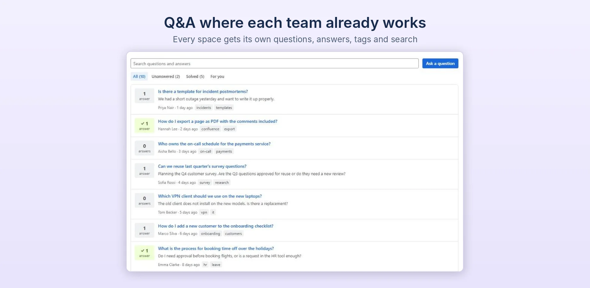
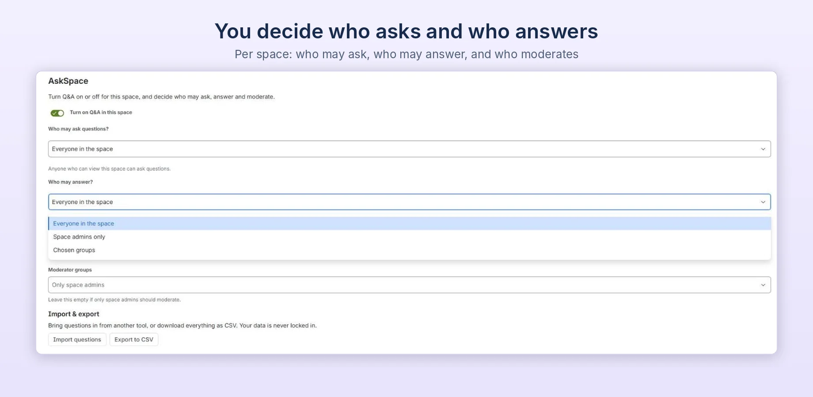
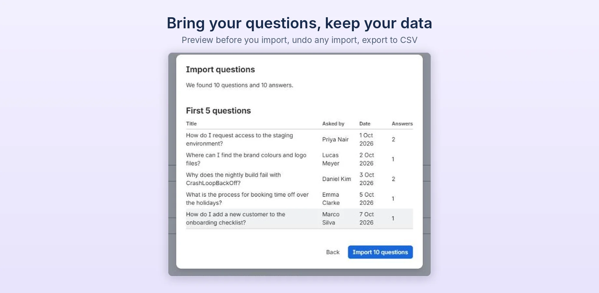
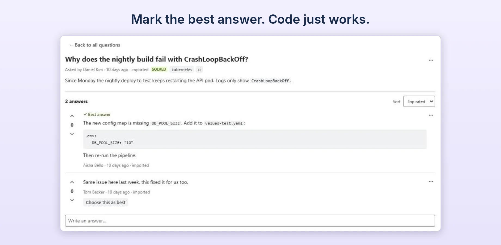

AskSpace · Confluence app
The answer belongs in the space, not in a chat thread.
Someone asks in chat. Someone answers. Two weeks later the next joiner asks the same thing. AskSpace keeps that loop inside the space, without turning on question and answer across the whole site.

Getting started
- Install AskSpace from the Atlassian Marketplace (Confluence admin).
- Open a space where you are a space admin. In the space sidebar, under Apps, click AskSpace. Q&A is off by default in every space, so you will see "Q&A is off in this space" and a Turn on Q&A button.
- Click Turn on Q&A. To choose Who may ask questions?, Who may answer? and Moderators, or for Import & export, go to Space settings → Integrations → AskSpace (default: everyone who can view the space may ask and answer).
- Go back to AskSpace in the space sidebar and click Ask a question. Others can answer and vote; the person who asked can mark the best answer.
- Use Search questions and answers and the tabs All, Unanswered, Solved to find answers. The For you tab shows when someone answers your question.
Need help? Email support@dortus.com.
See also: Q&A in Confluence Cloud: your options
Ask, answer, and one answer that wins
A question board is only useful if you can tell which answer is the real one. That is the part most wikis skip.
Ask
Title plus details and optional tags, with author and timestamp. Similar questions show up while you type. Filter the list for unanswered or solved.
Answer
Helpful and not helpful votes sit next to each answer, so what actually worked rises.
Mark best
One answer can be marked best, and the person who asked can never pick their own answer.
Control that fits one space at a time
A space admin switches it on where a team wants it. Nothing changes anywhere else.
-
Per space
Question and answer is off by default. Enable it only in the spaces that need it.
-
Two permissions
Who may ask and who may answer are set separately: everyone, space admins, or chosen Confluence groups.
-
Moderators
Space admins, and Confluence groups you choose, can edit or delete any question or answer in the space and choose the best answer.
-
Notifications
An in-app alert when someone answers you, or marks your answer as best.
-
On a page
The AskSpace questions block shows the latest questions from the space on a page, optionally for one tag.
-
Import and export
Bring questions in from Questions for Confluence or a CSV file, with a preview first and an undo afterwards. A space admin can export the questions and answers to CSV.

What it looks like in a real space
Captured in an Engineering space with the questions a team actually asks.


Questions never leave your Atlassian site
AskSpace is a Forge app. Questions, answers, tags, votes, settings and notifications are stored in Atlassian's Forge app storage, not on Dortus servers. No app content is sent to us. AskSpace reads Confluence content only to import questions from Questions for Confluence, when a space admin starts an import. It reads as that admin and only keeps the imported questions and answers.
- Platform
- Atlassian Forge
- Storage
- Forge app storage, your site
- Identity
- Atlassian accounts and groups
- Billing
- Atlassian Marketplace
Available on the Atlassian Marketplace
AskSpace is a public app under the Dortus vendor account. Install it from the Atlassian Marketplace, or email us for a walkthrough.